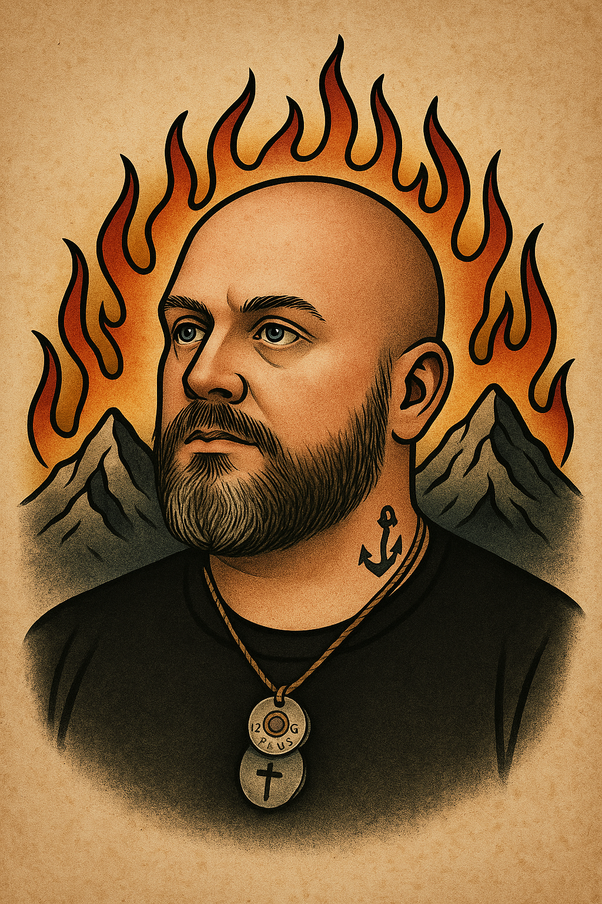

My Testimony
“And they have conquered him by the blood of the Lamb and by the word of their testimony...”
— Revelation 12:11 (ESV)
I didn’t grow up thinking I’d one day be building a ministry or publicly talking about God. But even as a kid, He was there. I heard His voice at 12 years old. I was told I was called — not just by people, but by the Spirit. It stuck in the back of my mind like a seed waiting for fire.
Life moved fast. I got older, got louder, and drifted. I chased what I thought would fill the hole — parties, relationships, things that looked good but never held weight. Then came the trauma — things I didn’t ask for. I witnessed a double homicide. I survived an attempt on my own life. My mind never fully came back from that moment.
PTSD. Anxiety. Depression. Sleepless nights that turned into months. I fought to hold it together — for work, for my kids, for some sense of control. But behind the curtain, I was spiraling. Church didn’t help. People didn’t understand. I felt like I was screaming into a void where no one could hear me.
By 2025, I was done. I didn’t want to live that way anymore. Then came the revival — and I don’t use that word lightly. I went to church on March 31st and something broke. I was prayed over. I felt the Spirit — like fire in my chest. I hit the altar and when I stood back up, everything was gone. Not eased. Not managed. Gone. PTSD. Anxiety. Depression. Just… gone.
The next morning, I heard God again — clearly, audibly. And the vision that followed? Fire pouring out of the Appalachian Mountains. He said, “It’s time.”
That’s how MTN.fire was born. Not from strategy. From supernatural. I was healed and called on the same day. And now I walk in that fire. Not perfect. Not polished. Just real — and set free.